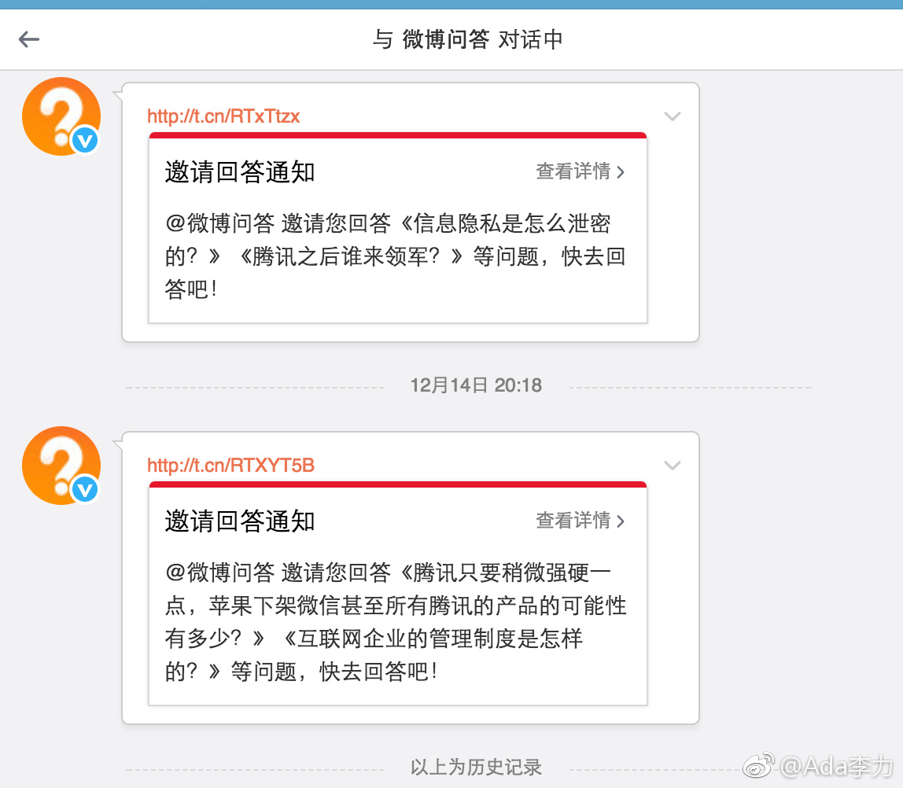
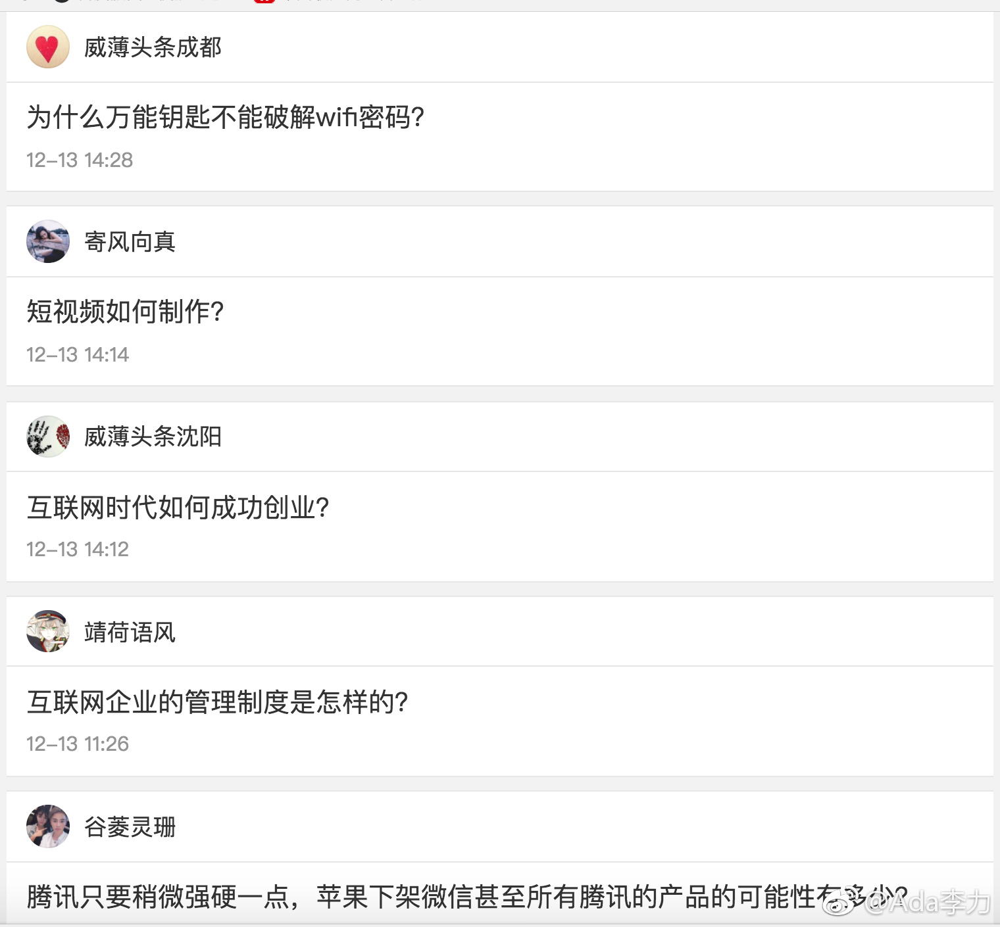

#运营#微博问答看起来又是个草率上马的项目，看看这些题目，想答都不知道从何入手。
互联网上早已有经典文“如何提问”，稍微看看也不至于用这么low的问题，官方发私信去骚扰用户。另外，呈现什么样的问题，应该是运营方的责任。这些问答如果有筛选的话，微博问答的筛选人是实习生吗？还是还是学习不行学校很一般的那种？
问答产品的运营模式，知乎已经淌出了很好的路子，借着微博的流量何人群优势，照着别人抄，亦步亦趋地学，都不至于做成这个样子。
估计又是个马上完蛋的项目。
互联网上早已有经典文“如何提问”，稍微看看也不至于用这么low的问题，官方发私信去骚扰用户。另外，呈现什么样的问题，应该是运营方的责任。这些问答如果有筛选的话，微博问答的筛选人是实习生吗？还是还是学习不行学校很一般的那种？
问答产品的运营模式，知乎已经淌出了很好的路子，借着微博的流量何人群优势，照着别人抄，亦步亦趋地学，都不至于做成这个样子。
估计又是个马上完蛋的项目。
- 
- 